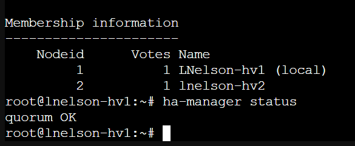
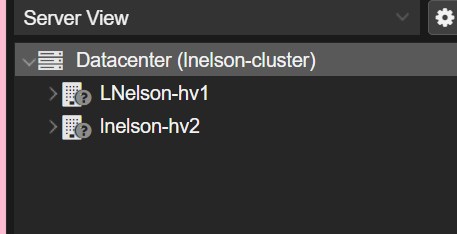
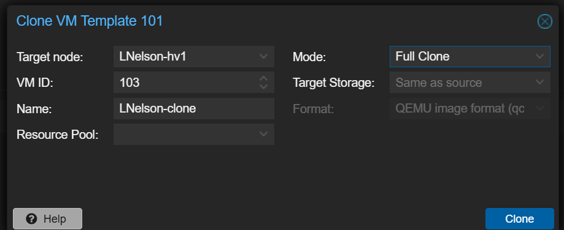
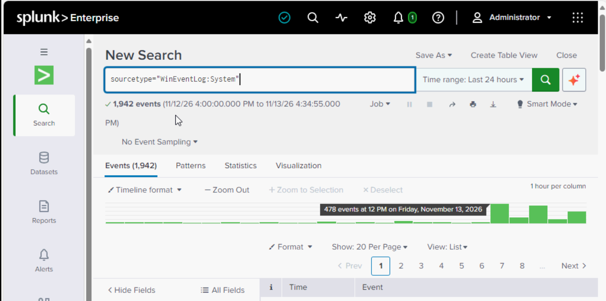
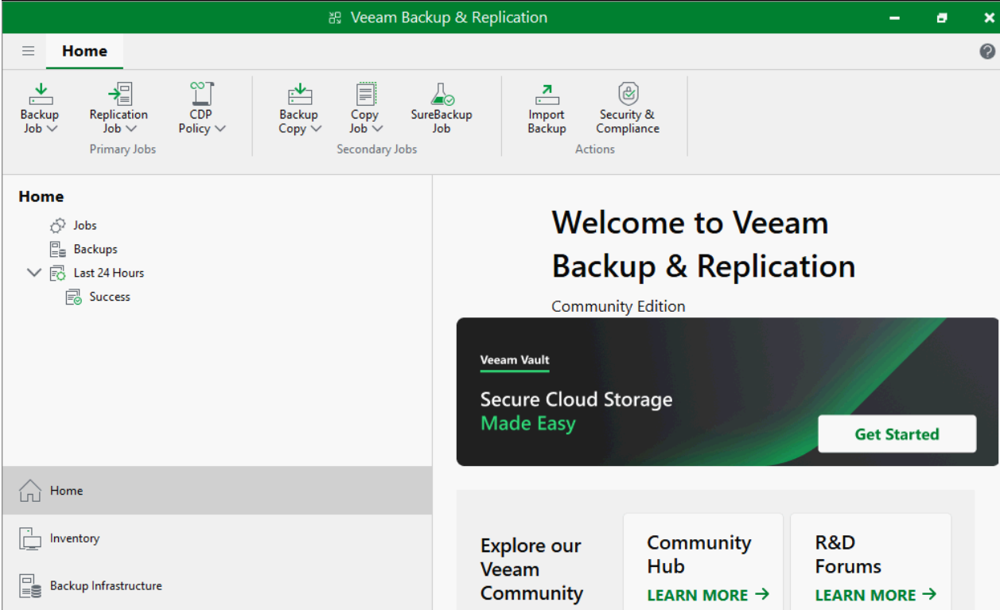
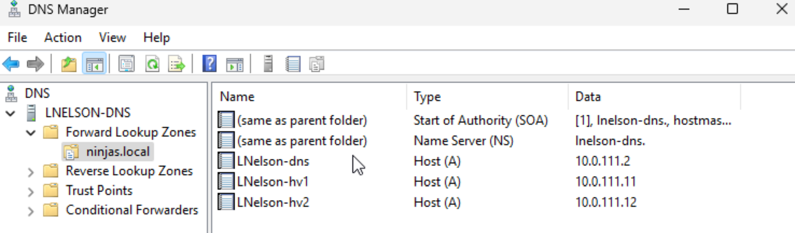
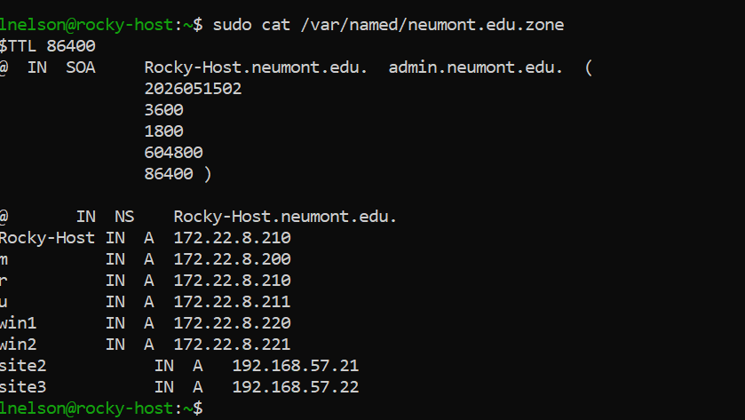
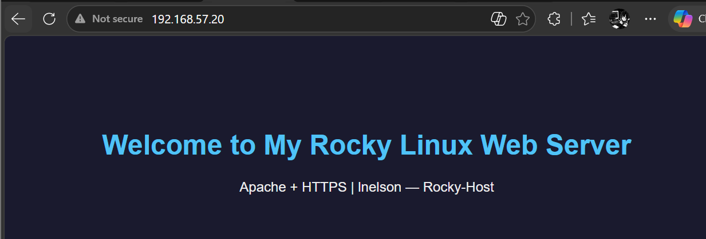
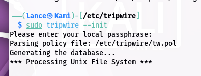
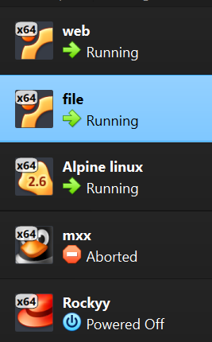

I'm a student at Neumont University, graduating in September 2027
with my bachelor's degree, and I'm already certified in CompTIA A+ and Security+.
Most of what I know comes from building things myself in my home lab. I spin up servers, configure services,
break them and fix them again. I care about stable systems, clean documentation, and using automation
to cut down on manual mistakes.
2CompTIA certifications
11Lab projects completed
2027B.S. graduation, Neumont
02
Projects
Real builds from my home lab and coursework. Click any screenshot to enlarge it.
// 01 · featuredCompleted
Proxmox High-Availability Cluster
Built a two-node Proxmox VE cluster (LNelson-hv1 + lnelson-hv2) with working quorum and
HA management. I connected shared storage from a Synology NAS over iSCSI and NFS, set up Linux network bridges
with VLAN tagging, built VM templates for fast full-clone deployments, and ran services in LXC containers.
I also handled repository configuration and system upgrades on both nodes.

Cluster membership: quorum OK

Datacenter view

Full clone from a VM template
Proxmox VE
Clustering / HA
iSCSI
NFS
Synology
VLANs
LXC
// 02Completed

1,942 Windows events indexed in 24 hours
Splunk Log Monitoring (SIEM)
Deployed Splunk Enterprise and installed the Universal Forwarder on a Windows file server to ship its
event logs. Then I searched and broke down the data by host, source, and event code to watch
what was happening across the domain.
Splunk Enterprise
Universal Forwarder
Windows Event Logs
SPL
// 03Completed

Backup jobs completing successfully
Veeam Backup & Replication
Installed Veeam Backup & Replication in my Windows Server domain, configured backup jobs for
domain servers, and confirmed they completed successfully. Backups you've actually tested are
what make recovery possible.
Veeam B&R
Windows Server
Backup & recovery
// 04Completed

Windows DNS forward lookup zone
Windows Server Infrastructure
Stood up Windows Server 2025 machines for a lab domain: a DNS server with forward lookup zones for my
hypervisors, a file server, and Hyper-V. I configured static IPs, joined machines to the domain,
and connected iSCSI storage.
Windows Server 2025
DNS
Hyper-V
iSCSI
PowerShell
// 05Completed

Hand-written BIND zone file
BIND DNS Server on Rocky Linux
Configured BIND (named) on Rocky Linux and wrote the zone files by hand, with SOA, NS and A records.
I set up zone transfers to a Windows DNS secondary server and checked resolution with dig and nslookup.
BIND / named
Rocky Linux
Zone transfers
dig
// 06Completed

Apache serving over HTTPS
Linux & Windows Web Servers
Hosted sites on Apache with HTTPS and name-based virtual hosts, ran nginx serving several sites on
different ports, deployed a PHP + MariaDB web app, and set up IIS on Windows Server. I also opened
only the ports each site needed in the firewall.
Apache
nginx
IIS
TLS
MariaDB
firewalld
// 07Completed

Tripwire file-integrity baseline
Linux Security Hardening
Locked down SSH with key-only logins and multi-factor authentication, wrote nftables firewall rules,
centralized logs with rsyslog, set up Tripwire file-integrity checks, and encrypted files with GPG.
I also ran vulnerability and port scans with Nessus and nmap.
SSH keys + MFA
nftables
rsyslog
Tripwire
Nessus
nmap
// 08Completed

Lab VMs in VirtualBox
Virtualized Home Lab
My everyday lab: multiple VMs (web, file, Alpine, Rocky) on isolated host-only and NAT networks, where
I practice troubleshooting, IP setup, and service connectivity. This includes a multi-disk Rocky Linux
build with /var on its own drive to keep logs separate.
VirtualBox
VMware
Rocky / Alpine
Host-only networking
// 09Completed
PBX / VoIP Server
Installed and configured a full PBX phone system with voicemail and call routing, and wrote
setup documentation so the build can be redeployed from scratch.
FreePBX / 3CX
VoIP
Call routing
Documentation
// 10Completed
Wireless Site Survey
Surveyed Wi-Fi coverage across several campus floors with Ekahau. I walked the floor plans, produced
signal-strength heatmaps, and mapped the access points and channels in use.
Ekahau
Wi-Fi heatmaps
RF / channels
// 11Scripting
Python Automation Utilities
Python scripts that automate repetitive admin tasks and help with monitoring and log review,
saving time and cutting down on manual mistakes.
Python
Log parsing
Monitoring
03
Skills
Tools I've actually deployed and configured, not just read about.
⌘ Operating Systems
Linux: Rocky, Ubuntu, Debian, Alpine, Kali
Windows Server 2025
Users, groups & permissions
systemd service management
▣ Virtualization
Proxmox VE clustering & HA
Hyper-V, VMware, VirtualBox
VM templates & LXC containers
iSCSI & NFS shared storage
⊞ Windows Infrastructure
Windows Server domain setup
DNS Manager & zones
File server & iSCSI
PowerShell administration
⇄ Networking & DNS
BIND & Windows DNS, zone transfers
VLANs & Linux bridges
IP addressing & subnetting
dig, nslookup, ping, traceroute
◈ Security
CompTIA Security+ certified
SSH hardening & MFA
nftables / firewalld
Nessus, nmap, Tripwire, GPG
◎ Monitoring & Backup
Splunk Enterprise + forwarders
rsyslog centralized logging
Windows Event Logs & Sysmon
Veeam Backup & Replication
◇ Web Services
Apache virtual hosts
nginx & IIS
HTTPS / TLS certificates
MariaDB + PHP apps
❯ Scripting
Python automation
PowerShell
Bash
Log parsing & tooling
☎ VoIP & Wireless
PBX installation & setup
Voicemail & call routing
Ekahau Wi-Fi surveys
Coverage heatmaps
04
Experience
Education, certifications, and ongoing lab work.
Expected Sept 2027
Bachelor's Degree
Neumont University
Certified
CompTIA Security+
Security concepts, access control, threats, and secure configuration.
Certified
CompTIA A+
Hardware, operating systems, troubleshooting, and IT support fundamentals.
Ongoing
Home Lab
Running a Proxmox cluster, a Windows Server domain, and Linux servers. I practice monitoring, backups, hardening, and upgrades on real systems.
05
Contact
Want to talk about an internship, an entry-level role, or a project? I'd love to hear from you.